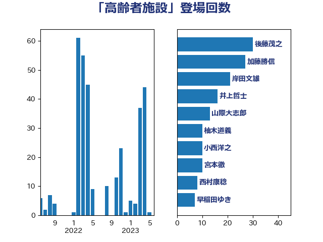

単語「高齢者施設」

| 後藤茂之 | 自由民主党 | 30 回 |
| 加藤勝信 | 自由民主党 | 27 回 |
| 岸田文雄 | 自由民主党 | 21 回 |
| 井上哲士 | 日本共産党 | 16 回 |
| 山際大志郎 | 自由民主党 | 13 回 |
| 柚木道義 | 立憲民主党 | 10 回 |
| 小西洋之 | 立憲民主党 | 10 回 |
| 宮本徹 | 日本共産党 | 10 回 |
| 西村康稔 | 自由民主党 | 8 回 |
| 早稲田ゆき | 立憲民主党 | 7 回 |
| 山田勝彦 | 立憲民主党 | 7 回 |
| 伊佐進一 | 公明党 | 7 回 |
| 中島克仁 | 立憲民主党 | 7 回 |
| 塩川鉄也 | 日本共産党 | 6 回 |
| 長友慎治 | 国民民主党 | 5 回 |
| 田村智子 | 日本共産党 | 5 回 |
| 古賀篤 | 自由民主党 | 5 回 |
| 倉林明子 | 日本共産党 | 5 回 |
| 比嘉奈津美 | 自由民主党 | 3 回 |
| 井坂信彦 | 立憲民主党 | 3 回 |
| 阿部知子 | 立憲民主党 | 2 回 |
| 長妻昭 | 立憲民主党 | 2 回 |
| 道下大樹 | 立憲民主党 | 2 回 |
| 窪田哲也 | 公明党 | 2 回 |
| 田村憲久 | 自由民主党 | 2 回 |
| 源馬謙太郎 | 立憲民主党 | 2 回 |
| 江田憲司 | 立憲民主党 | 2 回 |
| 水野素子 | 立憲民主党 | 2 回 |
| 梅村聡 | 日本維新の会 | 2 回 |
| 枝野幸男 | 立憲民主党 | 2 回 |
| 本田顕子 | 自由民主党 | 2 回 |
| 山井和則 | 立憲民主党 | 2 回 |
| 吉良よし子 | 日本共産党 | 2 回 |
| 高野光二郎 | 自由民主党 | 1 回 |
| 高木かおり | 日本維新の会 | 1 回 |
| 青柳陽一郎 | 立憲民主党 | 1 回 |
| 阿達雅志 | 自由民主党 | 1 回 |
| 谷田川元 | 立憲民主党 | 1 回 |
| 西岡秀子 | 国民民主党 | 1 回 |
| 藤井一博 | 自由民主党 | 1 回 |
| 菅義偉 | 自由民主党 | 1 回 |
| 羽生田俊 | 自由民主党 | 1 回 |
| 福田昭夫 | 立憲民主党 | 1 回 |
| 石川大我 | 立憲民主党 | 1 回 |
| 矢倉克夫 | 公明党 | 1 回 |
| 畦元将吾 | 自由民主党 | 1 回 |
| 田村まみ | 国民民主党 | 1 回 |
| 田中健 | 国民民主党 | 1 回 |
| 片山大介 | 日本維新の会 | 1 回 |
| 熊谷裕人 | 立憲民主党 | 1 回 |
| 漆間譲司 | 日本維新の会 | 1 回 |
| 清水真人 | 自由民主党 | 1 回 |
| 河西宏一 | 公明党 | 1 回 |
| 横沢高徳 | 立憲民主党 | 1 回 |
| 松野明美 | 日本維新の会 | 1 回 |
| 杉尾秀哉 | 立憲民主党 | 1 回 |
| 星北斗 | 自由民主党 | 1 回 |
| 志位和夫 | 日本共産党 | 1 回 |
| 平山佐知子 | 無所属 | 1 回 |
| 川合孝典 | 国民民主党 | 1 回 |
| 山田美樹 | 自由民主党 | 1 回 |
| 小川淳也 | 立憲民主党 | 1 回 |
| 大口善徳 | 公明党 | 1 回 |
| 大串正樹 | 自由民主党 | 1 回 |
| 大串博志 | 立憲民主党 | 1 回 |
| 堀井巌 | 自由民主党 | 1 回 |
| 吉川沙織 | 立憲民主党 | 1 回 |
| 佐藤英道 | 公明党 | 1 回 |
| 伊藤岳 | 日本共産党 | 1 回 |
| 中川貴元 | 自由民主党 | 1 回 |
| 上田清司 | 国民民主党 | 1 回 |
| 一谷勇一郎 | 日本維新の会 | 1 回 |